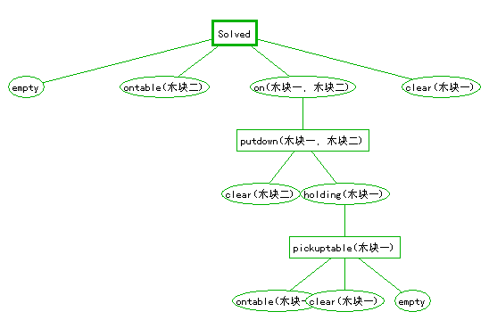

|
实验八 自动规划实验群 一、实验目的： 熟悉和掌握 自动规划的基本原理,方法和主要技术。 二、实验原理: 规划是一种问子题求解技术，它从某个特定的问题状态出发，寻求一系 列行为动作，并建立一个操作序列，直到求得目标状态为止。简而言之， 规划是一个行动过程的描述。一个总规划可以含有若干个子规划。 三、实验条件： 1 . 自动规划可视化实验环境:下图是该环境运行中的一个画面. 
四、实验内容： 1 观察并验证简单的规划过程。 2 对照实验过程，弄清Green方法与Strips方法的主要思路。 3 自己写一个简单的规划,再用实验环境创建一个相应的模型,并在实验中验证或修改它。
五、实验步骤： 1 进入实验环境，选择装载相关源文件。 2 选择不同的算法，观察搜索过程。 3 设置不同属性，观察实验过程的变化。 4 观察运行过程和搜索顺序，理解启发式搜索的原理。 6 根据程序运行过程画出算法框图。
六、实验结论：包括做实验的目的、方法、过程等，具体要写成实验报告，如下图所示（见下页）。 附：自动规划实验报告表:
|
|||||||||||||||||||||||||||||||||||||||||||||||||||||||||||||||||||||||||||||||||
| [导航栏特性在此站点中不可用] | |||||||||||||||||||||||||||||||||||||||||||||||||||||||||||||||||||||||||||||||||